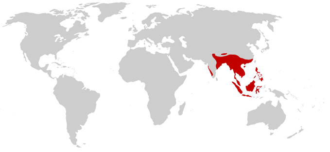
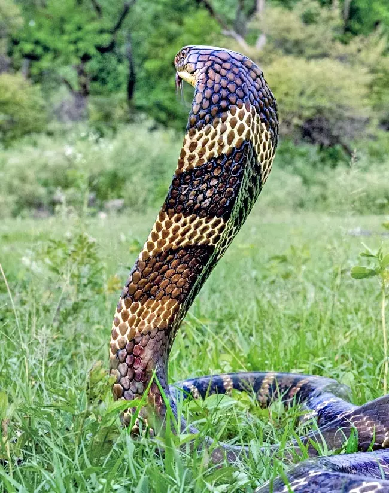

King Cobra
Description
The King Cobra is known particularly for its hood, which is made using the rib cage. Mature cobras may be yellow, green, brown, or black, and immature cobras are black in colour. They may reach 5.4m but are generally between 3-3.6m. Their fangs are 8-10mm long.
Habitat and Geography

The King Cobra is considered a 'vulnerable' species and its population is in decline due to persecution and killings by humans. They live throughout Southeast Asia, and in particular, in Thailand, India, Bangladesh, southern China, &c. Their habitats include forests, shrubland, wetlands, grasslands, and the like.[1]
Biology
King Cobras are very cautious and avoid danger as much as possible. If feeling threatened, their rib cage opens into a hood or 'cape' and will hiss.[2] Their fangs are hollow and they possess venom glands. King Cobras in the wild consume almost exclusively on other snakes.[3]
King Cobras produce a hissing sound, which is created by 'tiny holes in the trachea'.[3]
Breeding times differ per region, but the female will create a nest by sliding dead vegetation to herself using a loop. She will lay twenty to fifty eggs, which are white and leathery, and will incubate and 'guard' them for about two months. Male King Cobras stay nearby the nest.[2]
Media

Sources
- IUCN. (n.d.). Bald Eagle. Red List. https://www.iucnredlist.org/species/177540/1491874
- Encyclopædia Brittanica. (n.d.). King Cobra. https://www.britannica.com/animal/king-cobra
- Smithsonian's National Zoo. (n.d.). King Cobra. https://nationalzoo.si.edu/animals/king-cobra